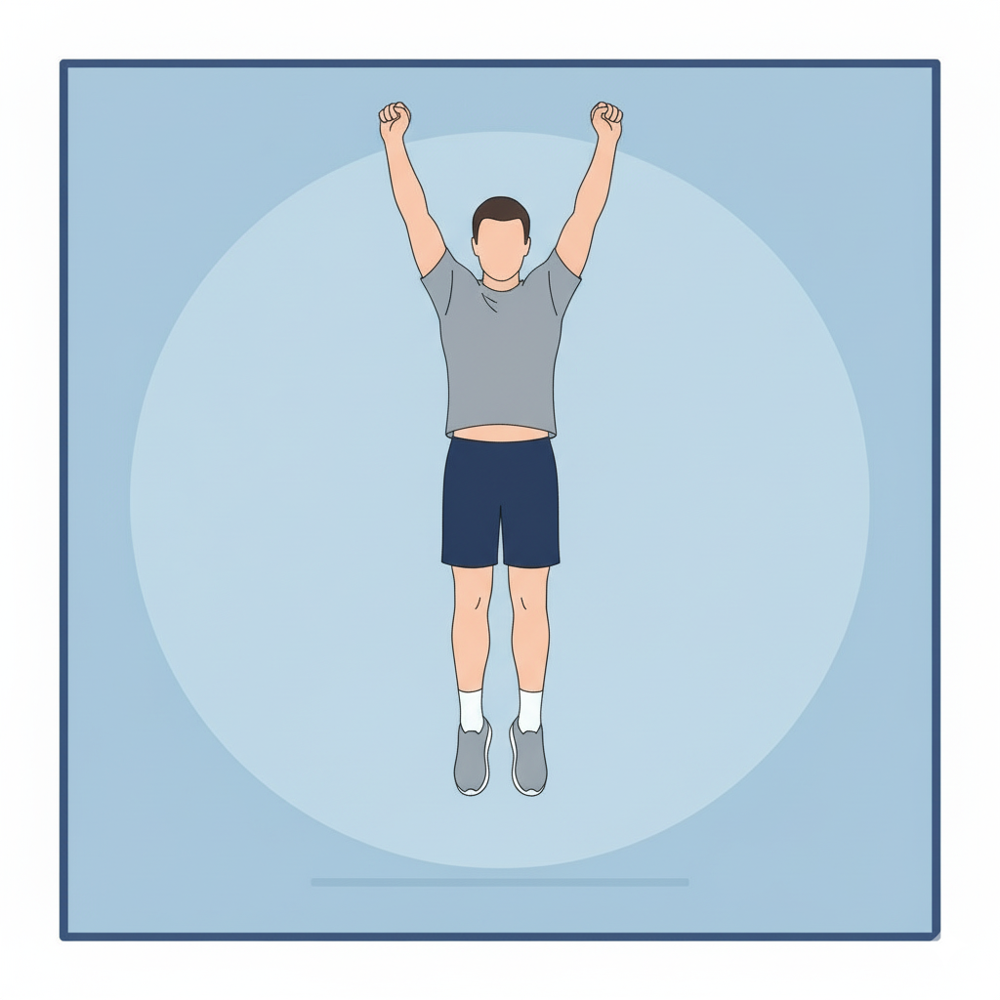
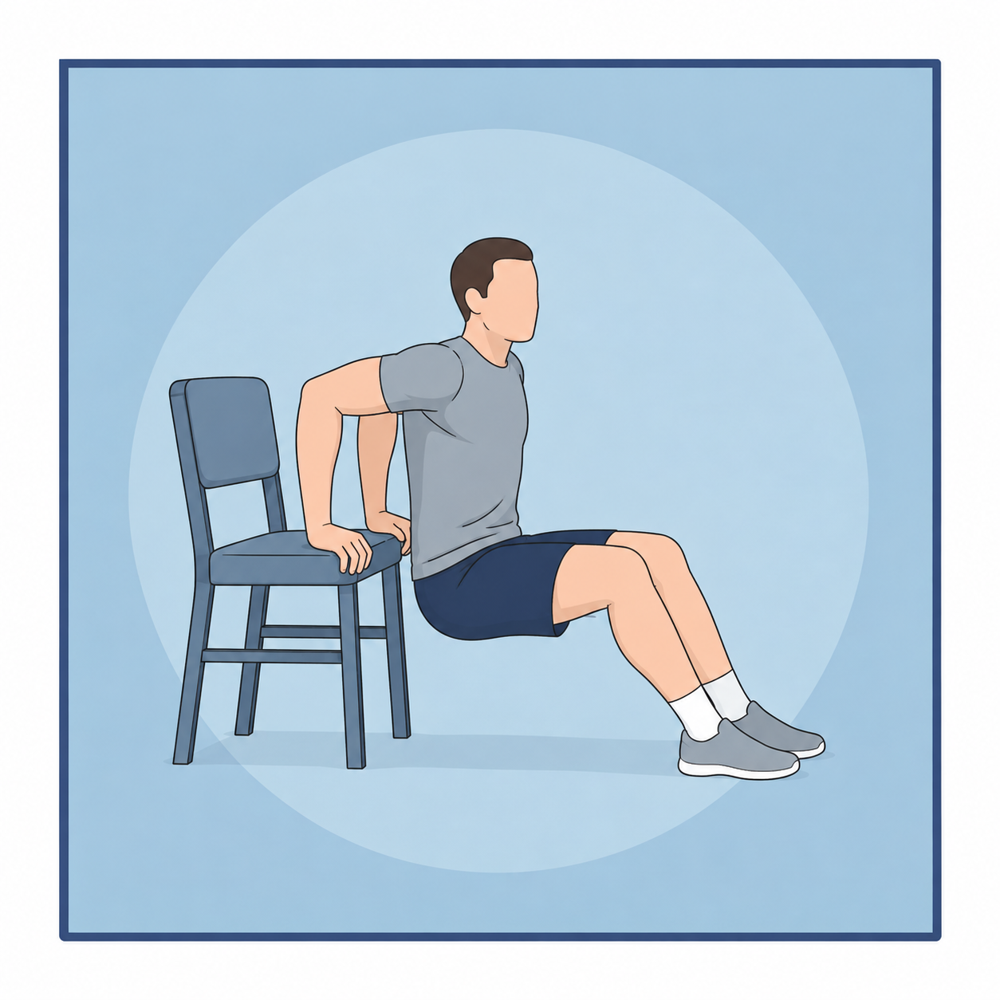
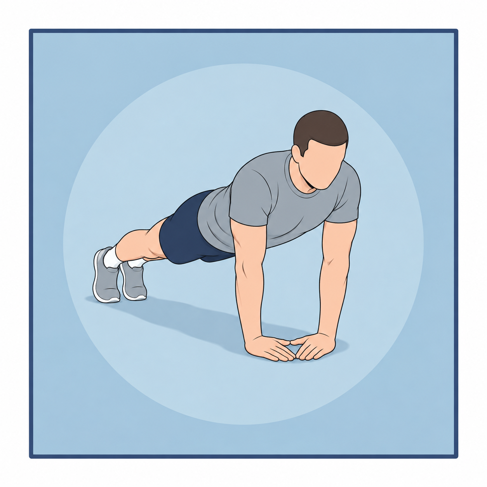
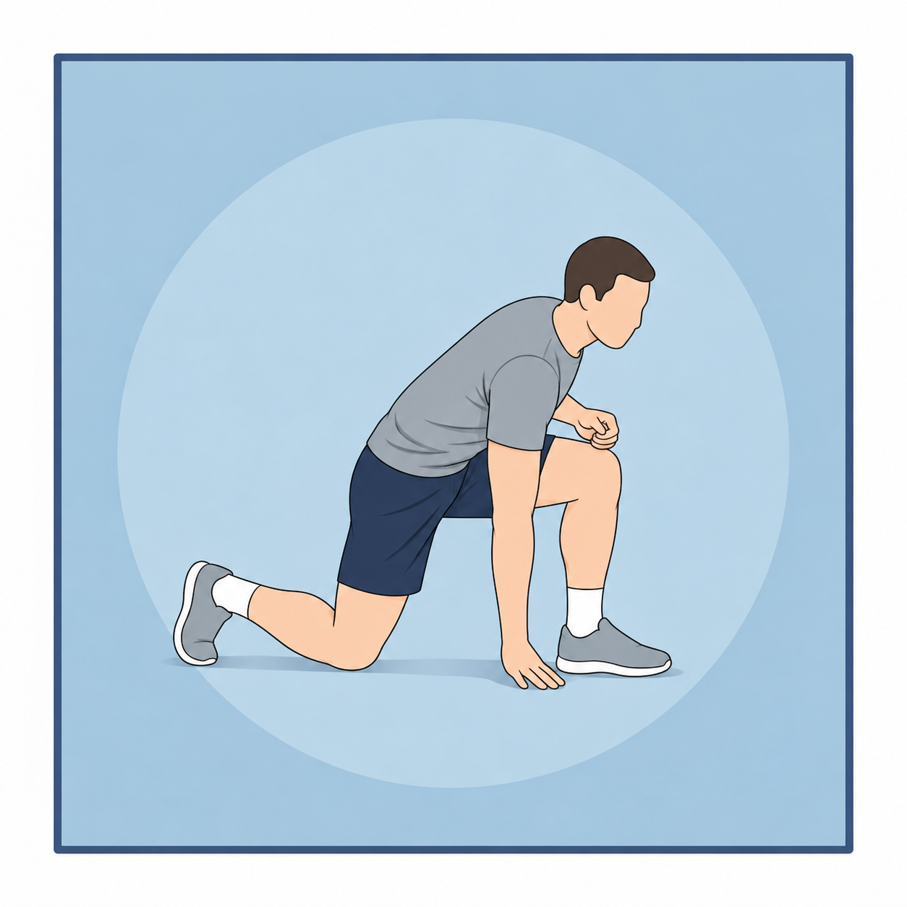

Черновой набор для обсуждения. Изображения показаны в размере карточки приложения: 280 × 280 CSS-пикселей. Нажмите на изображение, чтобы открыть оригинал.




Проверяем: узнаваемость упражнения, позу и опоры, соответствие стилю, читаемость мелких деталей. Для Lunge Touch And Kick проверяем согласованную нижнюю точку: колено и рука касаются пола.
Полные промпты · Chair Dip и Diamond Push-Up: по одной генерации. Lunge Touch And Kick: вторая версия после выбора пользователем другой фазы. Все три текущих изображения приняты пользователем. Промпт Lunge v2 · Предыдущая версия с ударом ногой